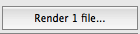
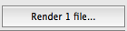

#openApp("/Applications/REAPER64.app/Contents/MacOS/REAPER")
#app = App("/Applications/REAPER64.app/Contents/MacOS/REAPER")
#app = App("/Applications/REAPER64.app)
#app.open()
#app.focus()
#app.close()
#openApp("/Applications/REAPER64.app")
#App.open("/Applications/REAPER64.app/Contents/MacOS/REAPER")
# screenshot using mac os
#type("4", KeyModifier.CMD + KeyModifier.SHIFT)
#type(" ")
#click("1557876150424.png")
#wait(1)
# NOTE: keep the plugin in windows in the center of the screen
# NOTE: set initial buffer size to 447
# NOTE: delete screenshots on the desktop before launching tests
# NOTE: set the preferences options to the page where is the buffer size
# NOTE: Reaper Preferences => cmd+shift+p
import sys.argv
import shutil;
# parameters
bufferSize = 1024
plugName = "BL-Gain12"
testNumber = "00"
#bufferSize = sys.argv[1]
# app
appName = "/Applications/REAPER64.app"
projectsPath = "/Users/applematuer/Documents/Dev/plugin-development/TestSystem-mac"
projectDir = "Projects/Reaper/" + plugName
projectName = plugName + "-TEST-" + testNumber + ".RPP"
appOpenTime = 6
screenshotDelay = 5
bounceTime = 10
# open app with project
app = App(appName)
appArgs = projectsPath + "/" + projectDir + "/" + "Project/" + projectName
app.setUsing(appArgs)
app.open()
wait(appOpenTime)
#app.focus()
# set buffer size
#type(",", KeyModifier.CMD) # not working
type("p", KeyModifier.CMD + KeyModifier.SHIFT)
wait(2)
doubleClick(Pattern( ).targetOffset(-21,-9))
wait(1)
type(Key.BACKSPACE)
keyDown(Key.SHIFT)
type(str(bufferSize))
keyUp(Key.SHIFT)
wait(1)
type(Key.ENTER)
wait(1)
# start play
type(" ")
wait(screenshotDelay)
# take a screenshot
click(
).targetOffset(-21,-9))
wait(1)
type(Key.BACKSPACE)
keyDown(Key.SHIFT)
type(str(bufferSize))
keyUp(Key.SHIFT)
wait(1)
type(Key.ENTER)
wait(1)
# start play
type(" ")
wait(screenshotDelay)
# take a screenshot
click( )
wait(1)
plugWin = App.focusedWindow()
regionImg = capture(plugWin)
screenshotPath = projectsPath + "/" + projectDir + "/" + "Result/Screenshots/"
screenshotName = "screenshot-" + projectName + "-" + str(bufferSize) +
)
wait(1)
plugWin = App.focusedWindow()
regionImg = capture(plugWin)
screenshotPath = projectsPath + "/" + projectDir + "/" + "Result/Screenshots/"
screenshotName = "screenshot-" + projectName + "-" + str(bufferSize) +  print(regionImg)
print(screenshotPath)
print(screenshotName)
shutil.move(regionImg, os.path.join(screenshotPath, screenshotName))
# bounce selection
type("r", KeyModifier.ALT + KeyModifier.CMD)
wait(1)
click()
wait(bounceTime)
#type("Key.ENTER")
click(Pattern(
print(regionImg)
print(screenshotPath)
print(screenshotName)
shutil.move(regionImg, os.path.join(screenshotPath, screenshotName))
# bounce selection
type("r", KeyModifier.ALT + KeyModifier.CMD)
wait(1)
click()
wait(bounceTime)
#type("Key.ENTER")
click(Pattern( ).targetOffset(-47,2))
wait(1)
app.close()
).targetOffset(-47,2))
wait(1)
app.close()